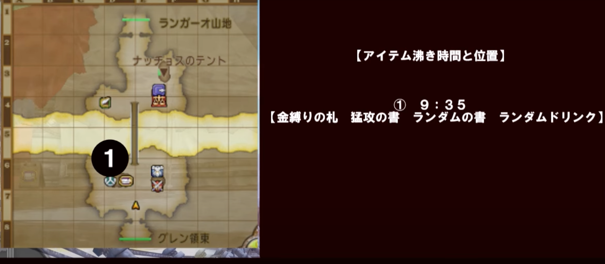

異星からの侵略軍
行動表(アイテム役)へジャンプ
行動表(レンジャー)へジャンプ
ボス:リルグレイド/マシン系/全素材入手可能
HP:65万
必要耐性:呪文，炎，マヒ (プラネットレーザー)
適職:バトマス,魔法戦士,レンジャー
アイテム↓↓
行動表 一般↓↓
| 残り時間 | 場所 | イベント/行動 |
|---|---|---|
| 10:00 開幕 | 前進しながらバフかけ．(バイキ，弓ポン，フォース) 開幕ドリンクは必要なし |
|
| 9:40 | 大砲サークル付近 | 敵出現 |
| 9:30 | 橋 | メカカンダタ/未確認飛行物体 出現 ・魔戦:メカカンダタにFB最速で打つ ・それ以外:CT技使わずに攻撃 ・アイテム役は左UFO忘れず倒す ※正面から壁する形で攻撃する(後ろから殴らない). ※アイテム役以外はメカカンダタ途中で切り上げずに攻撃し続ける. |
| 9:10頃 | 大ボス前 | 先頭の人にツッコミ移動. 金縛り使用までアイテム役の後ろで待つ. |
| 8:50 | 敵前 | 金縛り使われたら弱体
・鎌:厄災の滅撃 ・ブーメラン:デュアルブレイカー ・このあと魔戦が フォースブレイク(FB)→ダークネスショット(DS) |
| 8:10 | 大ボス付近 | ここまでに討伐を目指す!! |
行動表(アイテム役)↓↓
| 残り時間 | 場所 | イベント/行動 |
|---|---|---|
| 10:00 開幕 | ※バトマスが適任 クイックアーツ |
|
| 9:35 | マップ左 橋付近 | アイテム出現 |
| 9:30 | アイテム付近 | 未確認飛行物体 出現 天下無双で攻撃 |
| 9:15頃 | 橋南 | メカカンダタに合流 合流時にメカカンダタのHP黄色くなければ攻撃参加, 猛攻の書2枚あれば1枚使う. |
| 9:10 | 橋南 | メカカンダタのHP黄色, 赤色になったら攻撃中断して大ボス元へ先行. ツッコミ待機 |
| 9:00 | 大ボス前 | 橋を渡ったらリルグレイドに攻撃選択してダッシュ プラネットレーザーをしてくるので回避. 金縛りの書を使ってリルグレイドを止める. 6人以上近くに来たら猛攻の書を使う(左上ミニマップで確認). |
| 8:50 | 大ボス付近 | デバフ技を使う(プレートインパクト) あとはCT技で攻撃!! |
レンジャー
異星からの侵略軍のヒーラー枠
なので回復ドリンクの使用もしっかり考えよう!
操作:難しい というか忙しい..
これが正解というのが存在せず, もう1人のレンジャーによって動きが変わる.
できれば開幕はイルミンズールの弓を持って開幕チャージ短縮を狙う.
・メカカンダタ出現と同時にサマソ打てる.
・魔戦がクロックチャージ忘れてもなんとかなる!
・アイテム役することになった時のクロックチャージ漏れでも問題なし!
・テンション20以上あればゴッドスマッシュでUFO1確!
バトマスがいるならアイテムはバトマスに譲る(バトマス移動速度速いから..
※縛ってからデュアルブレイカーだと遅くなる.
魔犬の仮面はありっちゃあり.
開幕チャージしても8:30までは残るから.魔戦のFBは最遅でも8:30
大事なスキル↓↓
・紅蓮蝶のきり
効果範囲の味方にバイキルトとまもりのきり
開幕に他の人と被ってもいいから急いで使う. ２分超えそうなら更新も視野に入れる.
・ライガークラッシュ
通常攻撃の2.5倍×5連撃
最大49,995ダメージ与えることが可能
フォースブレイクや災禍の陣など, 一番火力が出ると思ったタイミングで使う．
・アヌビスアタック
きようさ依存の3連撃
守備力を0にする
効果時間:12秒 効果中に2~3行動しかできない
絶対レボル系の後に使う
必殺が切れるからといってリルグレイド初手に使うのはNG.
フォースブレイクも入ってないから誰もCT技使わない. 再チャージに期待した方が良い
・デュアルブレイカー
状態変化耐性低下(魔導の書効果)を付与
ダメージが目的ではない
メカカンダタではこのスキルは使わない. CTが回らなくなる.
リルグレイドをアイテム役が金縛りで縛った後, 他7名の誰よりも最初に打つスキル
誰かと被ってもキャンセルしなくていい.キャンセルお見合いが一番ダメ
・ゴールドフィンガー
敵のバフを解除
銭湯が長引きそうなで魔剣士や賢者がいなければ使う
フォースブレイクや災禍の陣など, 一番火力が出ると思ったタイミングで使う．
・レボル系3種
20秒間 被ダメージを50%増加させる
レボルスライサー, ケルベロスロンドIII, サマーソルトクロー
・レボルスライサー
・CT90秒 (開幕45秒) 成功率70%
・ケルベロスロンドIII
・CT110秒 (開幕55秒) 成功率87.5%
・サマーソルトクロー
・CT90秒 (開幕35秒) 成功率100%
クロックチャージをもらうので実際は-10秒
ボス前行動例↓↓
デュアルブレイカー→レボルスライサー→爪持ち替え→こころ(エステラ)→ケルベロスロンド→ライガークラッシュ→ゴッドスマッシュ→タイガークロー→サマーソルトクロー
この順番だとレボル系を切らさずにスキルを回せる.
プロのレンジャーであればレボルの70%は100%引こう!
行動表(レンジャー)↓↓
| 残り時間 | 場所 | イベント/行動 |
|---|---|---|
| 10:00 開幕 | スタート地点 | 前進しながら初手紅蓮蝶のきり. 他レンジャーと被ってもいい(お見合い回避) |
| 9:45 | 大砲サークル付近 | 魔結界して必殺チャージ狙い. 開幕ドリンクはチャンス誘発可能性があるからダメ |
| 9:40 | 大砲サークル付近 | 雑魚敵 出現 他レンジャーがメカカンダタに行ってるなら雑魚処理手伝い. 誰もいってなければ1ターン雑魚処理したらメカカンダタの方へ走る. |
| 9:25頃 | 橋南 | メカカンダタに最速でサマーソルトクロー 9:25最速. あとはタイガークローとかでメカカンダタを攻撃. ライガークラッシュとかは使わない. |
| 9:10 | 橋南 | メカカンダタ倒したらブーメランに持ち替えて先頭の人にツッコミ移動. アイテム役が金縛りの札使用するのを待つ. |
| 8:50 | 大ボス前 | アイテム役の金縛りの札使用が見えたらデュアルブレイカーを使う.他と被ってもいい.
その次レボルスライサー 70%入るのを祈る. 他レンジャーがレボル系使ってたら被せずに別の行動. ツメに持ち替えてライガータイミングを見計らって打つ! 6000×5くらいは出せたらいいね! |
| 8:10 | 大ボス付近 | ここまでで討伐を目指す!! |